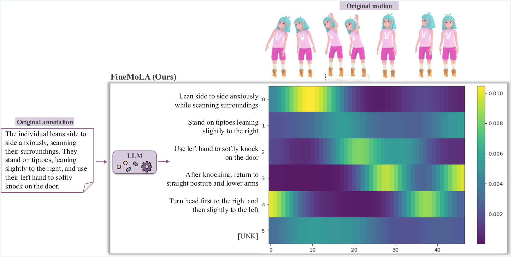
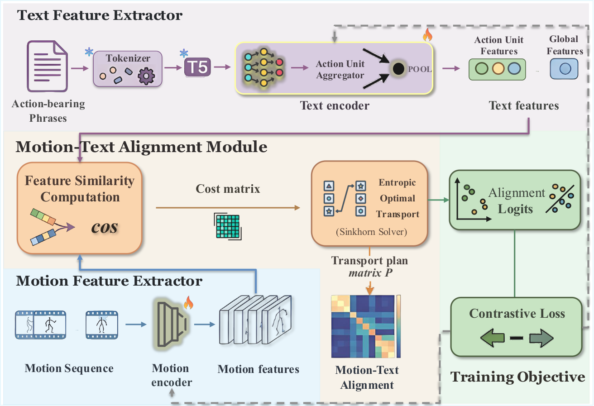
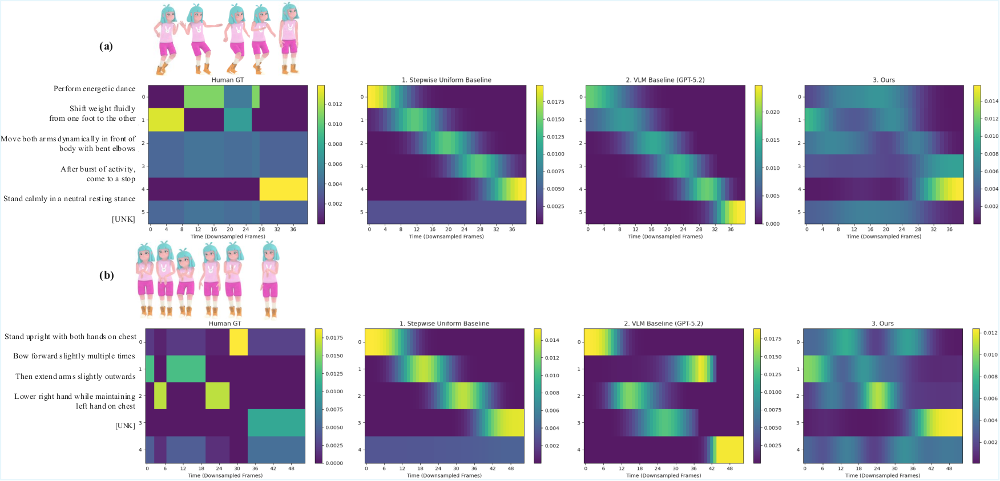
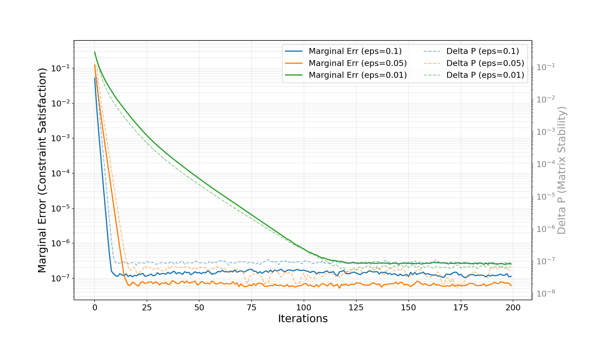

FineMoLA: Towards Fine-Grained Motion-Language Alignment from Clip-Level Supervision


- We introduce FineMoLA, a semi-supervised framework that learns fine-grained motion–language correspondence from clip-level annotations. By formulating frame-to-token alignments as an optimal transport problem, our method learns fine-grained correspondences for long-form textual descriptions, enabling dense motion–text grounding without requiring manual frame-level labels.
- Experiments on the SnapMoGen dataset demonstrate that the learned alignments provide stronger motion–text grounding than baselines.
Abstract
Text-conditioned human motion generation has made rapid progress with the emergence of large-scale motion--language datasets. However, even datasets with rich long-form descriptions typically provide supervision only at the clip level, without explicit temporal correspondence between motion frames and language. This limits fine-grained motion--text grounding and temporally precise generation. We propose FineMoLA, a semi-supervised framework that learns fine-grained frame--phrase correspondence directly from clip-level annotations. Our method first segments long-form descriptions into action-bearing phrases, and then formulates motion--language alignment as an optimal transport problem, which naturally models many-to-many relations between motion frames and text under global constraints. With entropic regularization and Sinkhorn iterations, FineMoLA efficiently infers pseudo frame-level alignments without human labeling. Experiments on SnapMoGen demonstrate that the learned alignments outperform baselines in motion--text grounding. Code will be released upon acceptance.
Teaser

Overview of the problem space and motivation for FineMoLA.
Method

The FineMoLA Pipeline. The text stream first encodes the action-bearing phrases with a frozen T5 backbone. Then the action unit aggregator aggregates the features into action unit features and the global feature, which form a text feature set. In parallel, the motion stream extracts temporal motion features using a temporal-convolution-based encoder. Given the motion and text features, we compute a feature-similarity-based cost matrix and solve an entropic optimal transport problem with the Sinkhorn algorithm to obtain pairwise alignment logits. These logits are then used in a CLIP-style symmetric contrastive objective for training.
Ensure: Trained parameters θm, θt
for each training epoch do
for each mini-batch {(m(i), t(i))}i=1B do
for i = 1 to B do
Zm,(i) ← Em(m(i); θm)
Zt,(i) ← Et(t(i); θt)
ℓ2-normalize all feature vectors in Zm,(i) and Zt,(i)
end for
for i = 1 to B do
for j = 1 to B do
Construct the cost matrix C(i,j) from Zm,(i) and Zt,(j)
Compute the Sinkhorn transport plan P(i,j)
Compute the pairwise alignment logit Lij
end for
end for
Compute motion-to-text probabilities p(t(j) | m(i)) by row-wise softmax over L
Compute text-to-motion probabilities p(m(i) | t(j)) by column-wise softmax over L
Compute the symmetric contrastive loss ℐ = 1/2(ℐm2t + ℐt2m)
Update θm, θt by minimizing ℐ
end for
end for
Results

Qualitative comparison with baselines. We plot the ground truth transport plan and those produced by different methods. Our method produces transport plans that are structurally similar to the ground truth.

Sinkhorn Convergence Analysis. The plot illustrates the impact of different entropic regularization parameters (ε) on the convergence rates of Marginal Error (representing constraint satisfaction) and Delta P (representing pointwise matrix stability).
| Method | GF | MLP Enc. | temp | Norm. ℓ1 ↓ |
|---|---|---|---|---|
| Stepwise Uniform Baseline | 0.347 | |||
| VLM Baseline (GPT-5.2) | 0.296 | |||
| Ours (GF + MLP encoder) | ✓ | ✓ | 0.07 | 0.225 |
| Ours (GF + MLP encoder) | ✓ | ✓ | 0.01 | 0.230 |
| Ours (GF + MLP encoder) | ✓ | ✓ | 0.03 | 0.237 |
| Ours (GF + attention encoder) | ✓ | × | 0.07 | 0.275 |
| Ours (MLP encoder) | × | ✓ | 0.07 | 0.239 |
Quantitative results. Values are reported in normalized ℓ1 distance (× 10-2), where lower is better. GF indicates whether to use the global feature. MLP Enc. determines whether to use an MLP-based text encoder or a self-attention-based text encoder.